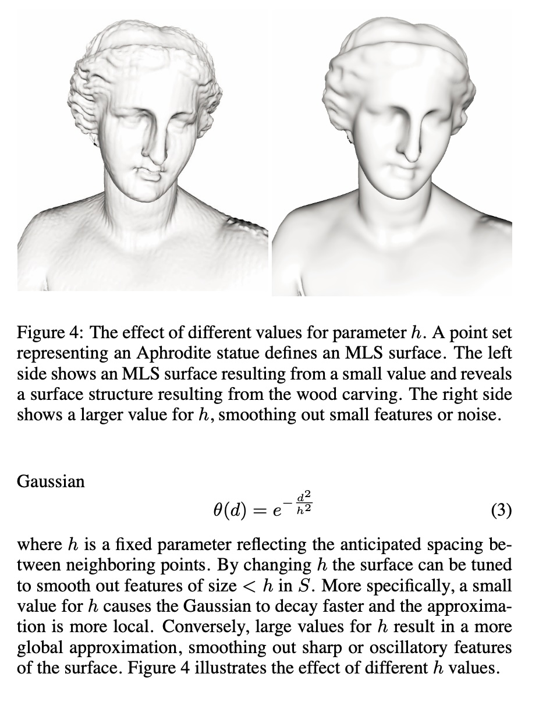
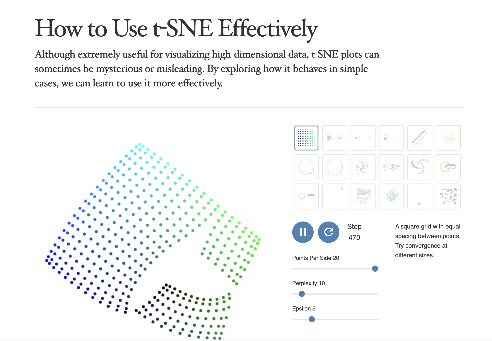
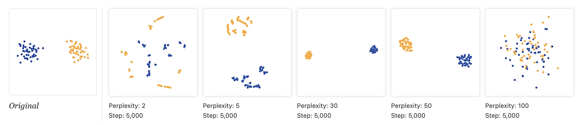
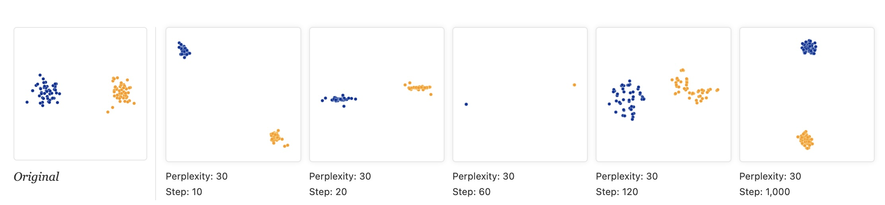
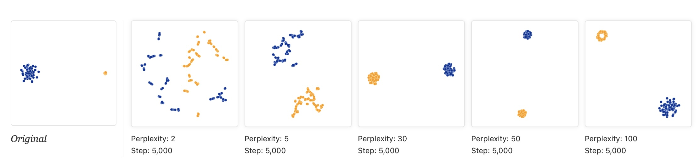
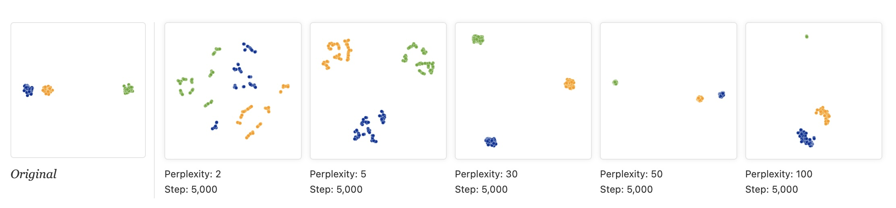
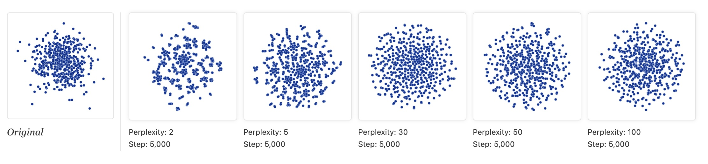
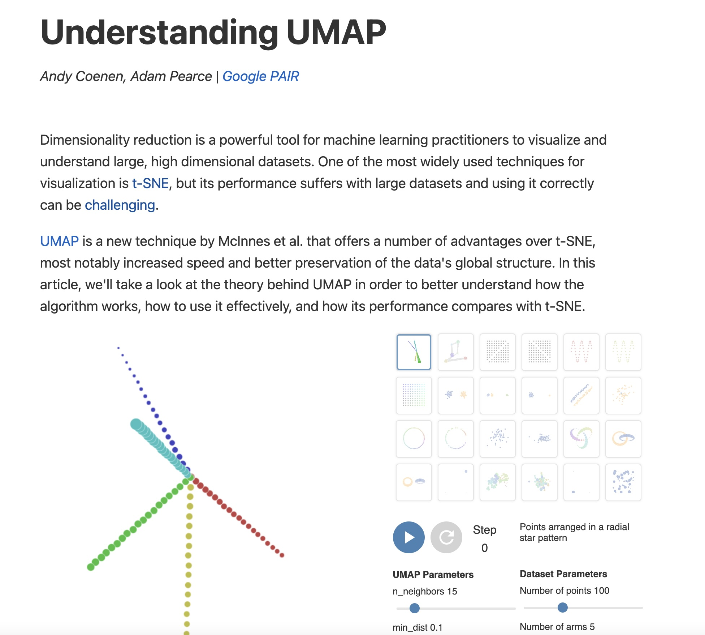
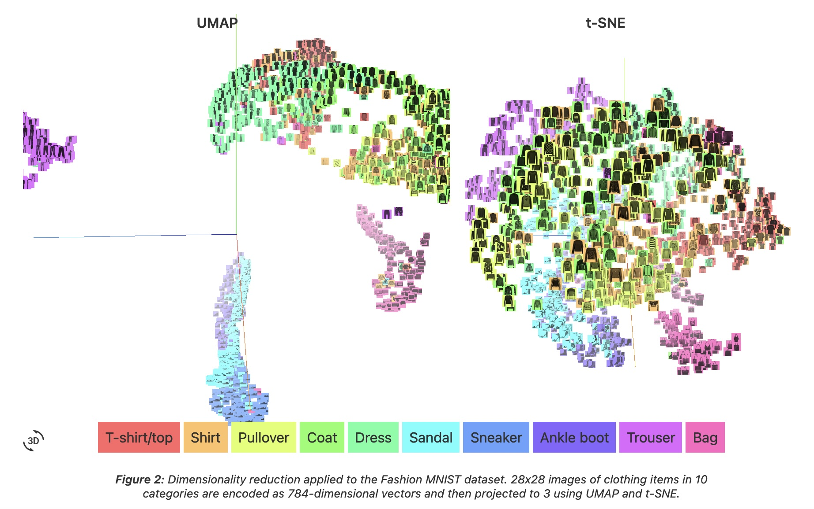
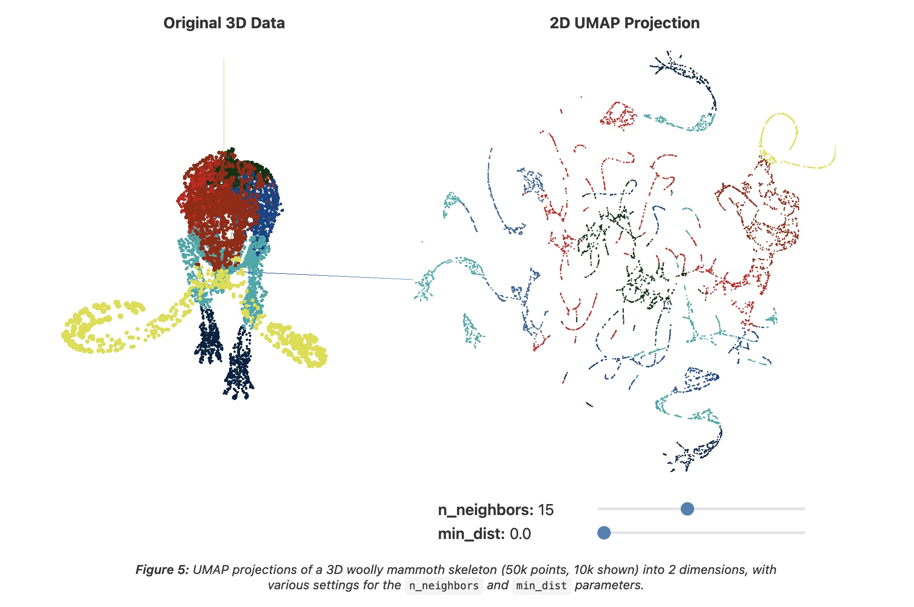

HERE is an excellent talk by t-SNE creator: video link
Digression: Point Set Surfaces

Wattenberg, Viégas, and Johnson, 2016

https://distill.pub/2016/misread-tsne/
t-SNE
Wattenberg et al writes “A popular method for exploring high-dimensional data is something called t-SNE… it has an almost magical ability to create compelling two-dimensonal “maps” from data with hundreds or even thousands of dimensions. Although impressive, these images can be tempting to misread.”
Wattenberg: “The algorithm is non-linear and adapts to the underlying data, performing different transformations on different regions. Those differences can be a major source of confusion.”
Watternberg: “A second feature of t-SNE is a tuneable parameter, “perplexity,” which says (loosely) how to balance attention between local and global aspects of your data. The parameter is, in a sense, a guess about the number of close neighbors each point has. The perplexity value has a complex effect on the resulting pictures.”
t-SNE
“Those hyperparameters really matter”

“The image for perplexity 100, with merged clusters, illustrates a pitfall: for the algorithm to operate properly, the perplexity really should be smaller than the number of points.”
t-SNE
“Each of the plots above was made with 5,000 iterations with a learning rate (often called “epsilon”) of 10, and had reached a point of stability by step 5,000. How much of a difference do those values make?”

t-SNE
“Cluster sizes in a t-SNE plot mean nothing”

“By size we mean bounding box measurements, not number of points.”
“The t-SNE algorithm adapts its notion of “distance” to regional density variations in the data set. As a result, it naturally expands dense clusters, and contracts sparse ones, evening out cluster sizes.”
t-SNE
“Distances between clusters might not mean anything”
“The next diagrams show three Gaussians of 50 points each, one pair being 5 times as far apart as another pair.”

t-SNE
“Random noise doesn’t always look random.”
“The next diagrams show genuinely random data, 500 points drawn from a unit Gaussian distribution in 100 dimensions. The left image is a projection onto the first two coordinates.”

t-SNE
“For topology, you may need more than one plot”
“The plots below show two groups of 75 points in 50 dimensional space. Both are sampled from symmetric Gaussian distributions centered at the origin, but one is 50 times more tightly dispersed than the other. The “small” distribution is in effect contained in the large one.”
Topomap (Doraiswamy et al)
Topomap preserves the 0-dimensional persistence diagram of the Rips filtration of the high-dimensional data.

https://pair-code.github.io/understanding-umap/
UMAP
Coenen and Pearce: “UMAP is fast, scaling well in terms of both dataset size and dimensionality. … UMAP can project the 784-dimensional, 70,000-point MNIST dataset in less than 3 minutes, compared to 45 minutes for scikit-learn’s t-SNE implementation. Additionally, UMAP tends to better preserve the global structure of the data.”

UMAP
“UMAP, at its core, works very similarly to t-SNE - both use graph layout algorithms to arrange data in low-dimensional space.”
UMAP parameters
n_neighbors - the number of approximate nearest neighbors used to construct the initial high-dimensional graph.
min_dist - the minimum distance between points in low-dimensional space.
UMAP parameters
n_neighbors - the number of approximate nearest neighbors used to construct the initial high-dimensional graph.
min_dist - the minimum distance between points in low-dimensional space.

UMAP parameters
n_neighbors - the number of approximate nearest neighbors used to construct the initial high-dimensional graph.
min_dist - the minimum distance between points in low-dimensional space.
UMAP
“However, it’s important to note that, because UMAP and t-SNE both necessarily warp the high-dimensional shape of the data when projecting to lower dimensions, any given axis or distance in lower dimensions still isn’t directly interpretable in the way of techniques such as PCA.”
“Most dimensionality reduction algorithms fit into either one of two broad categories: Matrix factorization (such as PCA) or Graph layout (such as t-SNE).”
“At its core, UMAP is a graph layout algorithm, very similar to t-SNE, but with a number of key theoretical underpinnings that give the algorithm a more solid footing.”